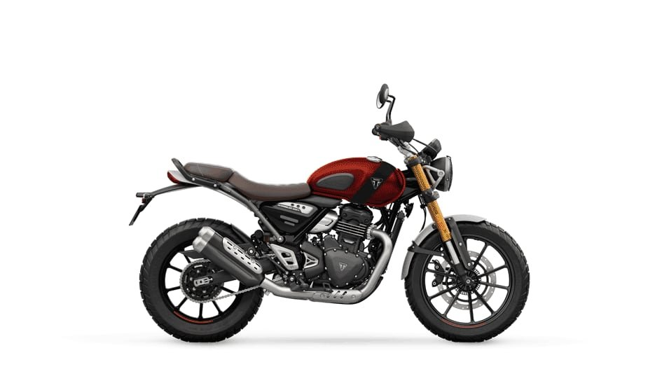

Triumph Scrambler 400 X Buying Guide
Scrambler · 398.15cc · 39.5 bhp · 2,63,000 ex-showroom
Quick Specs
Who Should Buy the Scrambler 400 X?
The Triumph Scrambler 400 X is a rugged scrambler designed for both on-road and light off-road adventures. With its distinctive styling and capable suspension, it's built for riders who want versatility with character.
✓ Ideal For
- Scrambling
- Light off-road
- Urban adventure
- Style-conscious riders
✗ Not Ideal For
- Long-distance touring without mods
- Off-road adventures
Strengths
- ✓ Versatile for all terrains
- ✓ Distinctive styling
- ✓ Good ground clearance
- ✓ Comfortable upright position
Weaknesses
- ✗ Heavier than road bikes
- ✗ Stiff ride on tarmac
- ✗ Limited wind protection
- ✗ Premium pricing
Riding Use Cases
Daily Riding
Well-suited for daily commuting with comfortable ergonomics and good fuel efficiency.
Highway Riding
Capable on highways for moderate distances. Consider adding a windscreen for better comfort.
Touring
With proper accessories like saddlebags and a comfortable seat, the Scrambler 400 X can handle touring duties.
City Riding
Good city motorcycle with manageable power and comfortable ergonomics for daily use.
Editor's Picks
Our top 3 recommendations for the Scrambler 400 X, handpicked by our experts.
Must Have Accessories
Start with these essentials. Each category has a budget pick and a best overall pick.
Buy your helmet and crash guard first — they're the most critical safety accessories. Then add a phone mount and bike cover for convenience.
Helmet
Non-negotiable. Protect your head with a quality helmet that meets safety standards.
Phone Mount
Navigate safely without holding your phone. Vibration-free mounts protect your camera.
Chain Lube
A well-lubricated chain ensures smooth rides and extends chain life significantly.

Comparison
How the Scrambler 400 X stacks up against its closest rivals.
| Feature | Scrambler 400 X | Pulsar 150 | Unicorn | Bullet 350 |
|---|---|---|---|---|
| Engine | 398.15cc | 149cc | 163cc | 349cc |
| Power | 39.5 bhp | 14 bhp | 12.7 bhp | 20.2 bhp |
| Torque | 37.5 Nm | 13.4 Nm | 14 Nm | 27 Nm |
| Mileage | 28 kmpl | 50 kmpl | 50 kmpl | 38 kmpl |
| Weight | 185 kg | 144 kg | 140 kg | 191 kg |
| Seat Height | 800 mm | 800 mm | 800 mm | 790 mm |
| Price | 2,63,000 | 1,10,000 | 1,10,000 | 1,75,000 |
| Best For | Scrambling, Light off-road | Daily commuting | Daily office commute | Highway cruising |
| Maintenance | Moderate | Moderate | Moderate | Moderate |
* Prices are ex-showroom and may vary by city. Specifications are approximate for comparison.
Buyer Setups
Choose the perfect accessory setup based on your riding style and budget.
Budget Rider
Under ₹3,000Essential protection and convenience without breaking the bank.
- ✓ Quality Helmet (Budget)
- ✓ Phone Mount
- ✓ Chain Lube
Daily Commuter
Under ₹5,000Essential protection and convenience for your daily office commute.
- ✓ Quality Helmet
- ✓ Phone Mount
- ✓ Bike Cover
- ✓ Chain Lube
Weekend Rider
Under ₹10,000Everything for those Saturday morning rides and Sunday coffee runs.
- ✓ Everything in Commuter
- ✓ Crash Guard
- ✓ Riding Gloves
- ✓ Tyre Inflator
Touring
Under ₹20,000Complete setup for long highway rides and multi-day trips.
- ✓ Everything in Weekend
- ✓ Riding Jacket
- ✓ Saddle Bag
- ✓ Tank Bag
Premium
No LimitThe ultimate setup with the best accessories money can buy.
- ✓ Premium Helmet
- ✓ Premium Crash Guard
- ✓ All Riding Gear
- ✓ Full Luggage Set
Why Riders Love the Scrambler 400 X
✓ Pros
- Versatile for all terrains
- Distinctive styling
- Good ground clearance
- Comfortable upright position
- Premium build quality
✗ Cons
- Heavier than road bikes
- Stiff ride on tarmac
- Limited wind protection
- Premium pricing
- Limited service network
Full Specifications
| Brand | Triumph |
| Model | Scrambler 400 X |
| Engine | 398.15cc |
| Power | 39.5 bhp |
| Torque | 37.5 Nm |
| Transmission | 6-speed |
| Type | Scrambler |
| Fuel Type | Petrol |
| Price (Ex-showroom) | 2,63,000 |
| Mileage | 28 kmpl |
| Kerb Weight | 185 kg |
| Fuel Capacity | 13 liters |
| Seat Height | 800 mm |
| ABS | Dual-channel |
| Brakes | Disc (Front), Disc (Rear) |
| Front Suspension | USD (Front) |
| Rear Suspension | Rear) |
| Front Tyre | 100/90-19 |
| Rear Tyre | Front, 140/80-17 |
| Service Interval | Every 3,000 km |
Compatibility
Year-wise compatibility and accessory availability for the Scrambler 400 X.
📅 Compatible Model Years
📦 OEM Accessories
Official Triumph accessories are available for the Scrambler 400 X. These offer perfect fitment but may cost more than aftermarket alternatives.
🔧 Aftermarket Accessories
A wide range of aftermarket accessories are available for the Scrambler 400 X. These offer great value and variety for customization.
Maintenance Schedule
Keep your Scrambler 400 X running at its best with this maintenance timeline.
First Service
Basic inspection, chain lube, tyre pressure check
Oil Change
Engine oil replacement, air filter cleaning
Chain Service
Chain and sprocket inspection, valve clearance check
Brake Inspection
Brake pad replacement, fork oil change
Recommended Maintenance Products
Motul C2 Chain Lube 150ml
Best for: All riders needing reliable chain lubrication
Motul C2 is India's most popular chain lube, compatible with all chain types and providing excellent weather resistance.
Chain Maintenance
Clean, lubricate, and adjust your chain like a pro
Read Guide →Washing Guide
Proper washing technique to protect paint and components
Read Guide →Tyre Pressure Guide
Optimal pressures for solo, pillion, and loaded riding
Read Guide →Engine Oil Guide
Best oils and change intervals for your engine
Read Guide →Common Problems & Solutions
Known issues with the Scrambler 400 X and how to fix them.
⚠ Chain noise
⚠ Seat discomfort
⚠ Electrical issues
Buying Advice
Expert tips for buying accessories for your Scrambler 400 X.
OEM parts fit perfectly but cost more. Aftermarket offers better value for non-critical accessories like phone mounts and bike covers.
Frequently Asked Questions
The Triumph Scrambler 400 X is priced at 2,63,000 (ex-showroom). On-road prices may vary depending on your city and variant.
The Triumph Scrambler 400 X offers a mileage of approximately 28 kmpl.
The Scrambler 400 X is primarily designed for city commuting and short weekend rides. However, with proper accessories like a comfortable seat and windscreen, it can handle moderate long-distance touring.
Essential accessories for the Scrambler 400 X include a quality helmet, phone mount, crash guard, and bike cover. For touring, consider adding saddlebags and a tank bag. Check out our complete accessories guide.
Regular service intervals for the Scrambler 400 X are Every 3,000 km. Always follow the manufacturer's recommended service schedule.
Yes, the Scrambler 400 X comes with Dual-channel ABS as standard equipment for enhanced safety.
The Scrambler 400 X has a seat height of 800 mm.
The Scrambler 400 X has a fuel tank capacity of 13 liters.
Yes, the Scrambler 400 X is a well-balanced motorcycle suitable for riders of all skill levels, including beginners.
The Scrambler 400 X has a kerb weight of 185 kg.
The Scrambler 400 X is powered by a 398.15cc Petrol engine producing 39.5 bhp of power and 37.5 Nm of torque.
Most accessories like phone mounts, bike covers, and chain lube are easy DIY installs. However, crash guards and some electrical accessories may require professional installation. Always check the installation guide before attempting DIY.
Regular maintenance includes chain cleaning every 500 km, engine oil change every 3,000 km, and brake inspection every 6,000 km. Follow the manufacturer's service schedule for best results.
The Scrambler 400 X can reach a top speed of approximately 120-130 km/h, depending on rider weight and road conditions.
With proper accessories like a comfortable seat, windscreen, and saddlebags, the Scrambler 400 X can handle touring duties effectively.
The Scrambler 400 X comes with a standard manufacturer warranty of 2 years or 30,000 km, whichever comes first. Extended warranty options may be available.
Related Motorcycles
Similar motorcycles you might also consider.